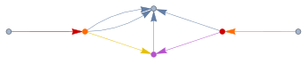
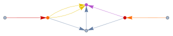
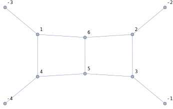
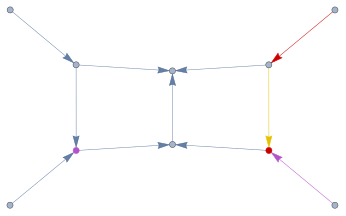

FCGraphFindPath[graph, weights] determines whether the
given graph can be traversed by starting and finishing at one of the
external edges.
The respective external edges must differ and {1} is
returned for all graphs with less than two such edges, since tadpoles
have no cut by definition.
The only supported weights are 1 and -1, with -1 meaning that the given edge cannot be passed.
Only directed graphs are supported but the direction of edges does not matter when searching for the path. The path is understood to be free of any cycles (loops).
Overview, FCGraphCuttableQ, FCLoopIntegralToGraph, SameSideExternalEdges.
This integral has no imaginary part due to the massive
m1-line that cannot be cut
graph1 = {-3 -> 2, -1 -> 1, 1 -> 3, 1 -> 4, 2 -> 3, 2 -> 4, 2 -> 4, 3 -> 4};GraphPlot[graph1]res1 = FCGraphFindPath[graph1, {1, 1, 1, 1, 1, -1, 1, -1}]\left( \begin{array}{cccc} \{-3\to 2,1\} & \{2\to 3,5\} & \{1\to 3,3\} & \{-1\to 1,2\} \\ \{-3\to 2,1\} & \{2\to 4,7\} & \{1\to 4,4\} & \{-1\to 1,2\} \\ \end{array} \right)
HighlightGraph[graph1, res1[[1]], GraphLayout -> "SpringElectricalEmbedding"]
HighlightGraph[graph1, res1[[2]], GraphLayout -> "SpringElectricalEmbedding"]
graph2 = {-4 -> 4, -3 -> 1, -2 -> 2, -1 -> 3, 1 -> 4, 1 -> 6, 2 -> 3,
2 -> 6, 3 -> 5, 4 -> 5, 5 -> 6};GraphPlot[graph2, VertexLabels -> "Name"]
res2 = FCGraphFindPath[graph2, {1, 1, 1, 1, -1, -1, 1, -1, 1, -1, 1}]\left( \begin{array}{ccc} \{-2\to 2,3\} & \{2\to 3,7\} & \{-1\to 3,4\} \\ \end{array} \right)
HighlightGraph[graph2, res2[[1]], GraphLayout -> "SpringElectricalEmbedding"]
FCGraphFindPath[graph2, {1, 1, 1, 1, -1, -1, 1, -1, 1, -1, 1}, SameSideExternalEdges -> {-1, -2}]\{\}